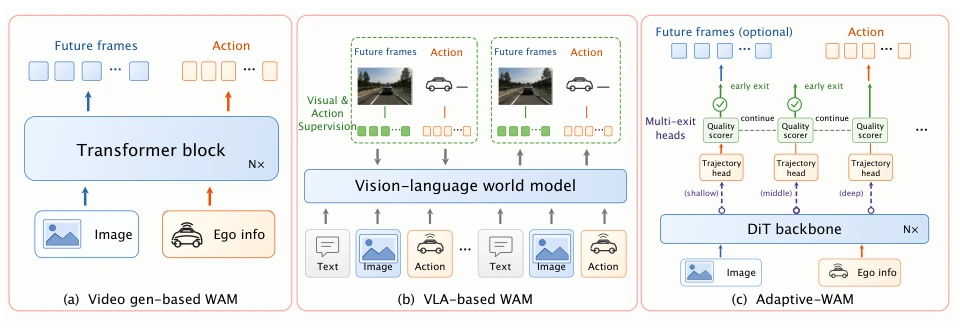
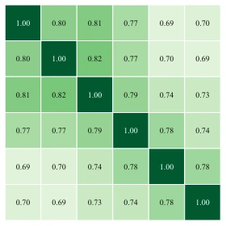

现有 WAM 如 DriveVA (Liu et al. 2026) 和 ReCogDrive (Li et al. 2025e) 虽然连接了预测与控制，但部署时往往耦合了迭代视频生成或固定骨干路径。这就像为了吃一口饭，非要煮好一锅汤。作者质疑：到底需要执行多少视频扩散模型才能做出可靠决策？实验发现，视频去噪时间步对规划影响不大，但 DiT 深度影响显著。不同深度的出口解决的问题集只有部分重叠（Figure 2），说明固定深度不是最优解。现有方法如 DriveLaW (Xia et al. 2025) 虽用早期特征，但仍依赖固定接口。Adaptive-WAM 旨在根据当前计划质量动态分配计算，避免不必要的 VAE 解码和迭代去噪。
—

Figure 1: Comparison of predetermined and adaptive WAM interfaces. (a) Video-backbone WAMs follow a predetermined frame/action generation path; (b) multimodal WAMs generate visual and action streams along a predetermined path; (c) Adaptive-WAM decodes one trajectory per attempted exit and routes by predicted quality. Future-video prediction supervises training but is not required by the deployed planner.

Figure 2: Post-RL Jaccard overlap of high-quality scene sets. Off-diagonal values of 0.69–0.82 show substantial but in- complete sharing across exits.
Figure 4: Overview of Adaptive-WAM. Wan2.2 retains video supervision while six intermediate blocks feed independent ReCogDrive-style trajectory heads. At inference, one trajectory is decoded per attempted exit; the lightweight DINOv2-Small scorer either returns the best accumulated trajectory or continues from the cached hidden state. Repeated heads and LoRA locations are schematic, and the future-scene branch denotes training supervision rather than the default deployed path.
Figure 5: Selected layer-wise trajectory overlays. Trajectory colors encode scores: green marks high-scoring trajectories, whereas red marks erroneous trajectories. These cases illustrate both cross-depth complementarity and the score ties that motivate a verifier rather than a strict total-order ranker.